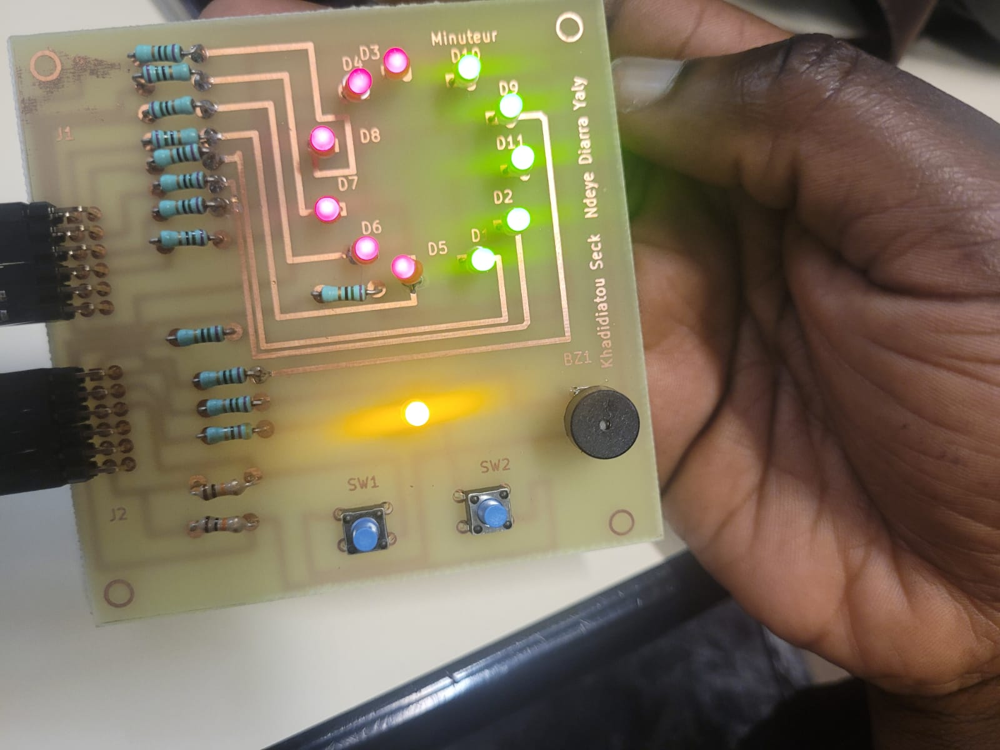
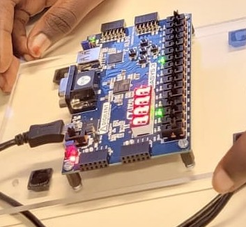
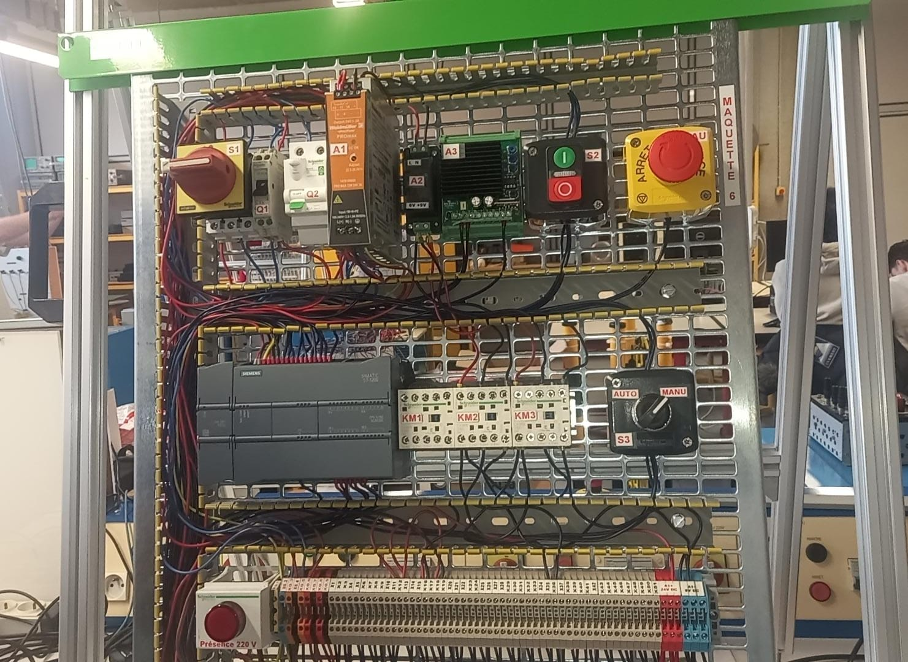
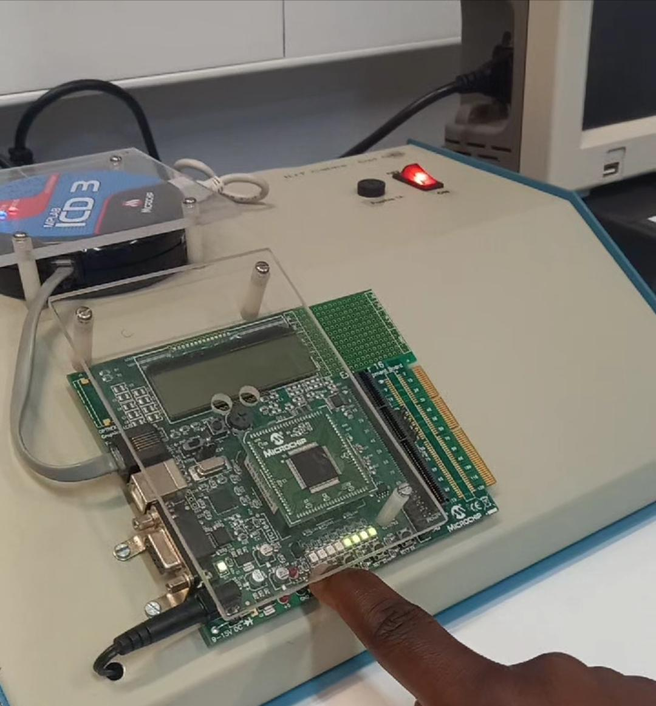
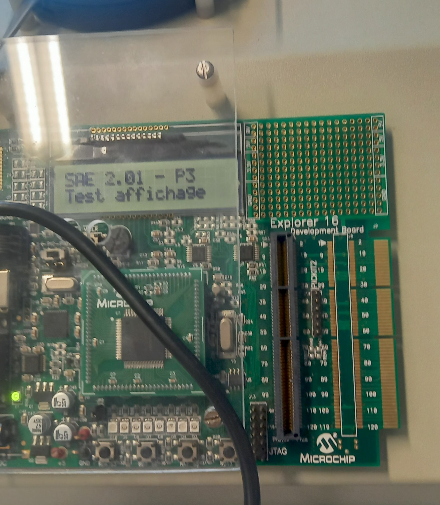

Informations personnelles
Recherche de stage
Avril 2027, 8 semaines, mobilité partout en France.
Intérêt particulier : LAN/Ethernet et systèmes communicants.
Expériences professionnelles
Avril 2027Stage recherché, 8 semaines
Je souhaite mettre en pratique mes compétences en électronique, systèmes embarqués et réseaux.
En 2e ou 3e annéeAlternance recherchée
Je suis aussi à la recherche d’une alternance, possible dès la 2e année comme en 3e année de mon BUT. Elle serait pour moi la meilleure option :
- Elle m’éviterait une nouvelle recherche de stage de 14 semaines en 3e année.
- Elle me permettrait de mener des projets concrets et durables dans l’entreprise.
- Elle faciliterait mon insertion dans le milieu professionnel.
- Elle me ferait travailler chaque jour dans l’électronique, ce qui me passionne.
Cette page s’enrichira avec mes prochains stages et expériences.
Projets
Le détail pas à pas de chaque projet est sur mon portfolio.
Projet 1 : minuteur pour la cuisson d’œufs
Électronique, FPGA, VHDL, PCB
Carte électronique conçue à partir d’un cahier des charges, avec un comportement logique en VHDL sur le FPGA Basys-3.
- Schéma, empreintes et routage du PCB sous KiCad
- Fabrication : insolation, gravure, perçage, soudure, tests
- VHDL : diviseur d’horloge, machine à états, anti-rebond, PWM du buzzer
- Correction de 3 bugs identifiés pendant les tests


Projet 2 : volet roulant automatisé
Automatisme, électronique, électrotechnique, embarqué
Automatisation d’un volet roulant : câblage, mesure du vent par anémomètre et commande de la montée et de la descente selon des seuils de sécurité.
- Câblage de la puissance (pont en H KM2/KM3) et de la chaîne de sécurité
- Adaptation de tension de l’anémomètre, vérifiée sous LTspice
- C sous MPLAB X sur PIC24 : lecture ADC, calcul du vent, affichage LCD
- Automate Siemens S7-1200 programmé avec TIA Portal (Grafcet)
- Diagnostic de pannes et maintenance



Projet 3 : acquisition de température
Projet en cours, électronique, Arduino
- Étude et réalisation d’un système d’acquisition avec capteur LM35
- Arduino et étude de la chaîne d’acquisition et des signaux
Compétences linguistiques
Compétences professionnelles
Les trois compétences du BUT GEII, avec les preuves détaillées sur mon portfolio.
ConcevoirConcevoir la partie GEII d’un système
- AC11.01 : analyse fonctionnelle d’un système simple
- AC11.02 : prototype de solutions matérielles et logicielles
VérifierVérifier la partie GEII d’un système
- AC12.01 : procédure d’essais, hors tension puis sous tension
- AC12.02 : identification d’un dysfonctionnement
- AC12.03 : effets du dysfonctionnement et correction
MaintenirMaintenir la partie GEII d’un système
Régler et valider un système en boucle ouverte et fermée à partir d’essais.
- TP2 Automatique : système du 1er ordre, acquisition ADUSB et Scilab/Xcos
- TP3 Automatique : système du 2nd ordre, même chaîne d’acquisition
- TP5 Automatique : asservissement de vitesse d’un moteur à courant continu
Habilitation électrique
Niveaux B0/B1 (NF C 18-510) : consignation en 5 étapes, protections, EPI.
Savoir-être
Travail en équipe, rigueur, communication claire à l’oral comme à l’écrit.